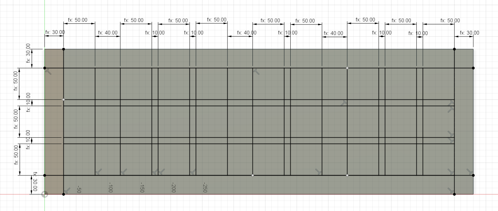
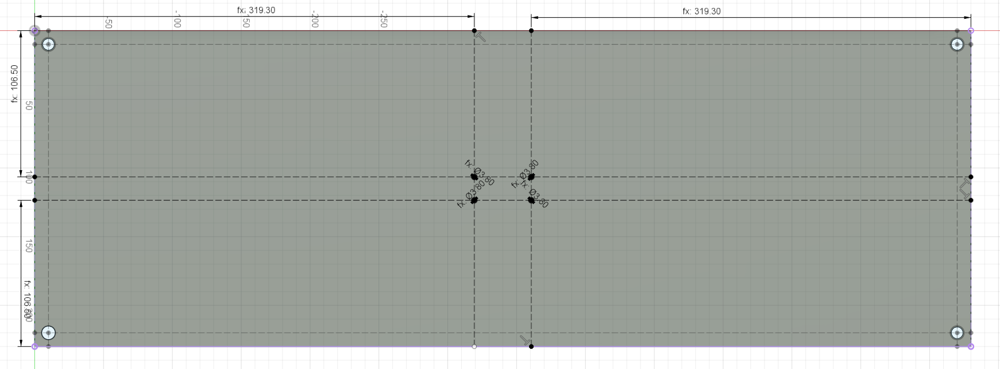

Denne oppgaven går ut på å designe noe i Fusion 360 og IncScape. I Fusion 360 designet jeg en boks for å lage en TIX klokke, men starten på hvordan det elektriske skal være inni.
Fusion 360
Bilde av ferdig Fusion 360 design, for TIX en TIX klokke holden med montering for en Raspberry Pi peco
I Fusion 360 valgte jeg å designe en boks for å holde en TIX clokke. Siden jeg ikke vet alle målene på alle delene som vil bli brukt i denne boksen har jeg lagn mange variabler slik at når jeg vet mer om selve prosjeket trenger jeg ikke redesigne hele boksen, jeg trenger bare å endre på noen verdier.
Skisse en firkant med lengde BOX_length og bredde BOX_width
Ekstruder så skissen med høyden BOX_height
Skisser på toppen av bosken. Her skal vi legge til firkantene som vi senere vil legge LED lys under. Målene vi skal bruke er LED_marign , LED_width , LED_height , LED_spacingUnit og LED_spacingSet . Følg så bilde under å sett inn riktig variabel for målet.

Bilde av alle målene for å få alle rutene på en TIX klokke
Ekstruder så disse rutene i -BOX_height .
Skisser nå undersiden av bosken slik at vi får kanter med BOX_wallThickness , slik at vi kan ekstruere innover i klossen å få en boks med BOX_wallThickness tykke kanter.
Skisser nå plass til skruehull. Lag en hjelpelinje som går BOX_wallThickness / 2 på begge kantene. Lag så en sirkel alle stedene hjelpelinjene krysser. Jeg har satt diameteren på disse hullene til å være BOX_screwDiameter , så sett diameteren på disse sirkelene til dette. Så kan sirkelene ekstrueres til -BOX_screwHoal .
Sett så inn "thred" i hvert av hullene som nettop ble lagd. Jeg har ikke sett noe på hvilke type skruer som er bra å bruke osv. så jeg lar bare skruehullene være på "standard" verdiene. Som er:
Thread
ISO Metric profile
Size
10.0mm
Designation
M10x1.5
Class
6H
Direction
Right hand
Lag nå enda en kube, med BOX_length , BOX_width og BOX_bottomThikness . Legg også opp for skruehull som passer boksen som ble lagd over.
Nå kan vi lage monteringen for Raspberry Pi enheten jeg har planer om å bruke for å styre all elektronikken i klokken. Denne skal for nå være montert i midten av klokken, så vi må lage noen skruepunkter for denne. Igjen har jeg ikke sett mye på skruer, så noen av målene må sikkert endres.

Montering for en Raspberry Pi Pico
Lag noen hjelpelinjer med lengde ( BOX_length / 2 ) - ( RPP_totLen / 2 ) + RPP_screwFromEdgeL og høyde ( BOX_width / 2 ) - ( RPP_totWidth / 2 ) + RPP_screwFromEdgeW fra hjørnene. Der disse hjelpelinjene møtes lag noen sirkler, disse skal være det Raspberry Pi Pico en skal monteres, og skal da ha en diameter på RPP_screwDiameterOuter . Ekstruder Så sirkelen oppover, jeg valgte RPP_totThick * 4 . Derretter kan en skisse lages på vær av stolpene med en sirkel, i midten, hvor diameteren er RPP_screwDiameterInner .
Dette prosjektet kan du finne under /DigiFab/projects/Task1. Der er også filen til prosjektet
IncScape
Jeg var ikke helt sikker på hva jeg ville lage her, så jeg så på skrivebordet å så Steam logoen, så jeg tenkte å prøve å lage den.